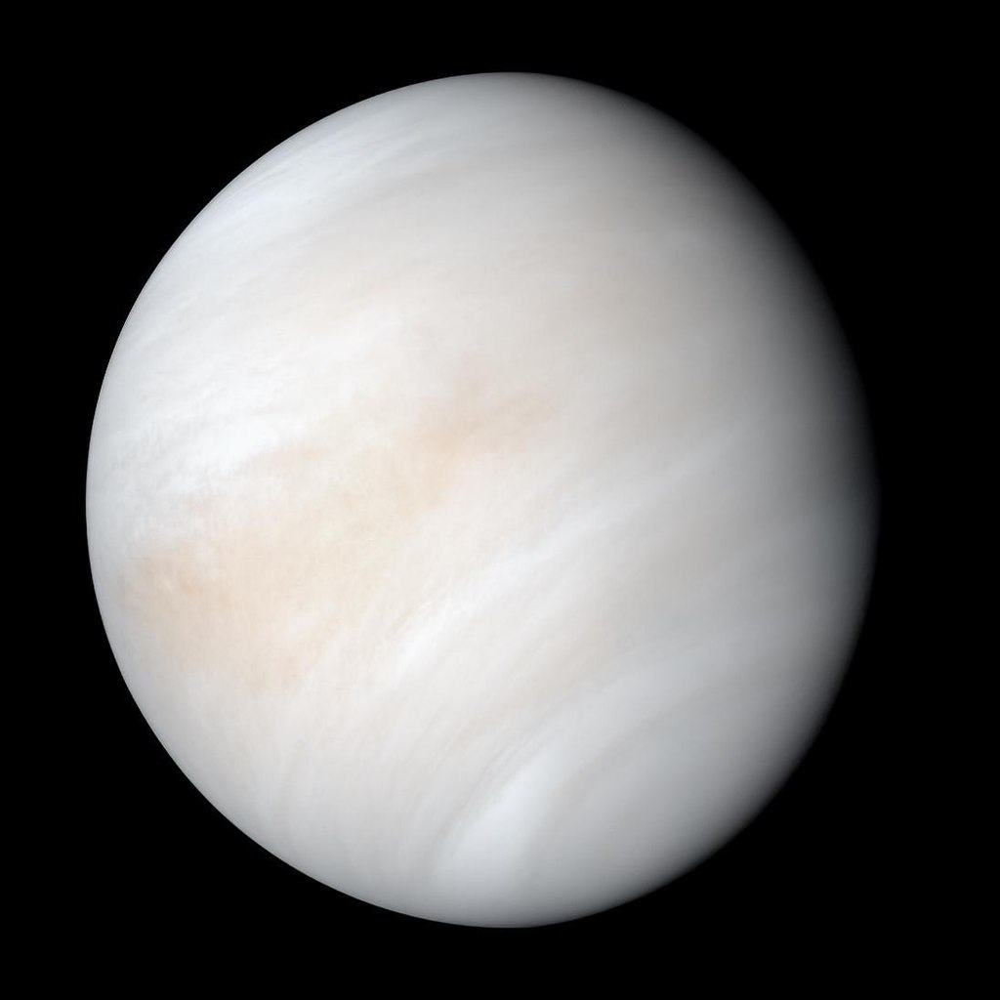
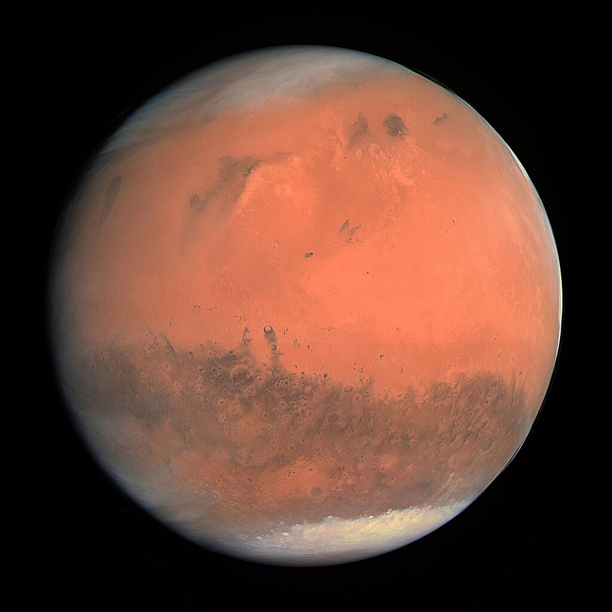
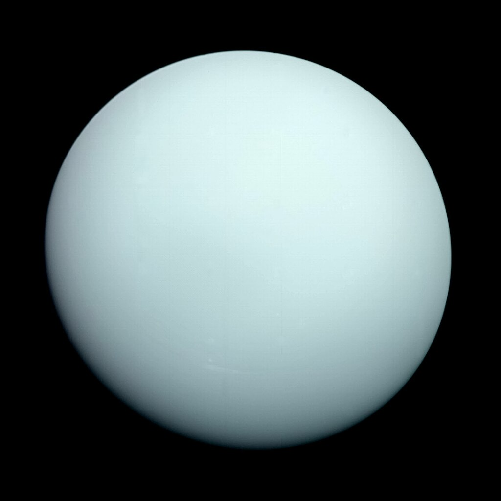
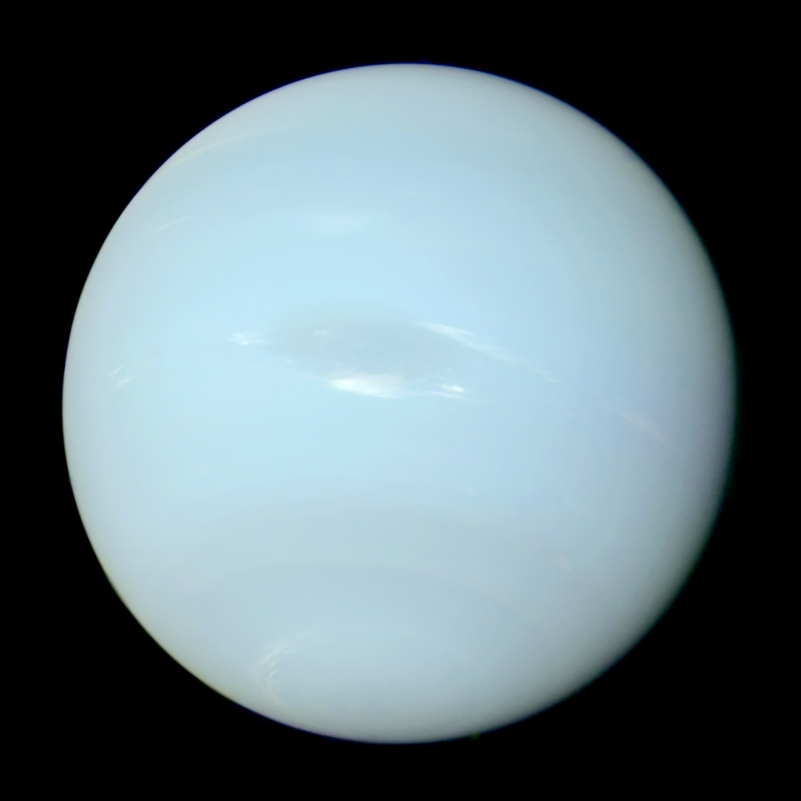

| Mercury | Venus | Earth | Mars | Jupiter | Saturn | Uranus | Neptune |
| 0 | 0 | 1 | 2 | 79 | 82 | 27 | 14 |
Mercury is the smallest planet in our solar system and the nearest to the Sun. Mercury is only slightly larger than Earth's Moon. Its surface is covered in tens of thousands of impact craters. Despite its proximity to the Sun, Mercury is not the hottest planet in our solar system – that title belongs to nearby Venus, thanks to its dense atmosphere. But Mercury is the fastest planet, zipping around the Sun every 88 Earth days. Mercury is appropriately named for the swiftest of the ancient Roman gods.
Venus is the second planet from the Sun, and the sixth largest planet. It’s the hottest planet in our solar system. Venus is a cloud-swaddled planet named for a love goddess, and often called Earth’s twin. But pull up a bit closer, and Venus turns hellish. Our nearest planetary neighbor, the second planet from the Sun, has a surface hot enough to melt lead. The atmosphere is so thick that, from the surface, the Sun is just a smear of light.

While Earth is only the fifth largest planet in the solar system, it is the only world in our solar system with liquid water on the surface. Just slightly larger than nearby Venus, Earth is the biggest of the four planets closest to the Sun, all of which are made of rock and metal. Earth is the only planet in the solar system whose English name does not come from Greek or Roman mythology. The name was taken from Old English and Germanic. It simply means "the ground." There are, of course, many names for our planet in the thousands of languages spoken by the people of the third planet from the Sun.

Mars is no place for the faint-hearted. It’s dry, rocky, and bitter cold. The fourth planet from the Sun, Mars, is one of Earth's two closest planetary neighbors (Venus is the other). Mars is one of the easiest planets to spot in the night sky – it looks like a bright red point of light. Despite being inhospitable to humans, robotic explorers – like NASA's Perseverance rover – are serving as pathfinders to eventually get humans to the surface of the Red Planet.

Jupiter is a world of extremes. It's the largest planet in our solar system. If Jupiter was a hollow shell, 1,000 Earths could fit inside. Jupiter also is the oldest planet, forming from the dust and gases left over from the Sun's formation 4.5 billion years ago. But it has the shortest day in the solar system, taking only 10.5 hours to spin around once on its axis.

Saturn is the sixth planet from the Sun and the second largest planet in our solar system. Adorned with a dazzling system of icy rings, Saturn is unique among the planets. Saturn is a massive ball made mostly of hydrogen and helium. The farthest planet from Earth discovered by the unaided human eye, Saturn has been known since ancient times. The planet is named for the Roman god of agriculture and wealth, who was also the father of Jupiter.

Uranus is the seventh planet from the Sun, and it's the third largest planet in our solar system – about four times wider than Earth. Uranus is a very cold and windy planet. It is surrounded by faint rings, and more than two dozen small moons as it rotates at a nearly 90-degree angle from the plane of its orbit. This unique tilt makes Uranus appear to spin on its side. Uranus is blue-green in color due to large amounts of methane, which absorbs red light but allows blues to be reflected back into space.

Dark, cold and whipped by supersonic winds, giant Neptune is the eighth and most distant major planet orbiting our Sun. More than 30 times as far from the Sun as Earth, Neptune is not visible to the naked eye. The planet’s blue color comes from methane in its atmosphere, which absorbs red wavelengths of light, but allows blue ones to be reflected back into space – very much like its neighbor, Uranus. Neptune was the first planet located using math. German astronomer Johann Galle was the first to observe the planet in 1846. The planet is named after the Roman god of the sea.
